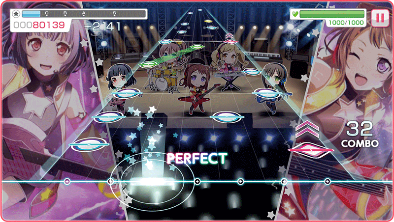

Hobbies
Träning med Lucy
Vem är Lucy?
Lucy är min lilla barn som i en kropp av en nymfparakit. Jag köpte honom från en djuraffär i Nässjö som heter Djurkompassen 6 Augusti 2021.
Personalen på djuraffären trodde att Lucy var en tjej och därför fick han namnet "Lucy".
Tricks
Yes! Lucy är en duktig fågel som är matmotiverad. Lucy kan olika tricks, som high-five, recall, spin, och mycket mer.
Datorspel
Stardew Valley
Love and Deepspace
Rhythm spel


Anime
Jag älskar anime med romance, komedi, aktion och slice of life som genre. Jag kan kolla på andra animerade filmer med, men sällan filmer med "riktiga människör". Några av mina favorit anime är Zetsuen no Tempest, Frieren och Kiss Him, Not Me.
K-pop
TXT
BTS
På min åsikt är deras musik lätt att lyssna på och sjunger många olika typer av musik t.ex, ballad, rock, pop, rnb, och mycket mer! De är ocskå roliga att kolla på, en riktigt komedi-grupp.
Jag har en stor crush på en av medlemmarna. Han heter Beomgyu och är clownen av gruppen. Han gör gruppen livligare och kan vara lite pösig ibland. Jättesöt 💕
Deras talang som sångare och dansare är OUT OF THIS WORLD. Deras dans är inte en skoj och inte deras sjung heller. Många deras låt är inspirerande och hjälpte mig mycket när jag mådde dåligt.
Det finns många som tycker inte om dem, jag själv gillade inte dem på början men sakta sakta älskade dem. BTS gick genom mycket skit för att komma till vart de är idag, men ändå är de fortfarande jordnära gör sitt bästa att göra deras Army glada.